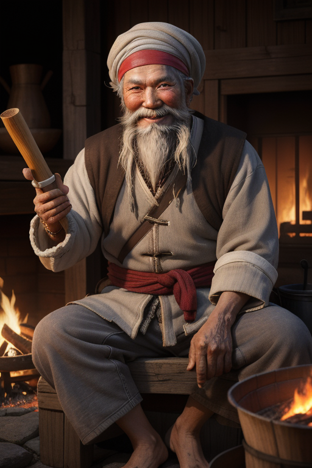

洪七公
天下第一大帮丐帮帮主，五绝之一的"北丐"。为人正义而幽默，最大的爱好是吃——为了吃可以赴汤蹈火，但为了正义可以放弃吃的。他是金庸笔下最"接地气"的绝顶高手。
人物小传
| 姓名 | 洪七公 |
| 别名 | 北丐、九指神丐、老叫花 |
| 身份 | 五绝之一（北丐）、丐帮第十八代帮主 |
| 特征 | 右手缺一根食指（因贪吃误事自断） |
| 徒弟 | 郭靖、黄蓉 |
| 主要武功 | 降龙十八掌、打狗棒法 |
| 爱好 | 美食（自称"吃遍天下美味"） |
| 性格标签 | 正义、豪爽、贪吃、逍遥、大智若愚 |
性格分析
大智若愚的逍遥客
洪七公是五绝中最"像人"的一位。王重阳高高在上、黄药师孤傲不群、欧阳锋阴毒狠辣、一灯大师慈悲渡人——只有洪七公像一个拿你没办法的长辈：贪吃、爱开玩笑、但大是大非面前从不含糊。
他的性格核心是"逍遥却不失底线"。他可以为了吃一只叫花鸡在荒山野岭等三天，但绝不会为了一口吃的做违背道义的事。他贪吃但不贪婪，贪玩但不误国。这种"有底线的自由"才是最难得的境界。
洪七公最大的性格魅力在于他的"不装"——他从来不觉得自己是天下五绝就该端着。他可以和小乞丐一起蹲在路边啃鸡腿，也可以在华山之巅与天下英雄论剑。这种"对下不傲、对上不卑"的态度，让所有人都喜欢他。

命运轨迹
奇遇与转折
美食奇缘
洪七公传郭靖武功，是金庸武侠中最有意思的"奇遇"——因为这个"遇"是黄蓉用美食换来的。叫花鸡、好逑汤、玉笛谁家听落梅……黄蓉用一道道美食引诱洪七公教郭靖武功，而洪七公明知是"圈套"也心甘情愿地往里跳——因为他实在太爱吃了。
这段情节的深意在于：洪七公之所以愿意教，不光是因为吃，更是因为他看出了郭靖的赤诚。吃只是给了双方一个台阶。洪七公一生阅人无数，他知道什么样的人值得教。
武功绝学
降龙十八掌
丐帮镇帮绝学，天下至刚至猛的掌法。洪七公的降龙十八掌比郭靖更加纯熟老练——他的每一掌都带着几十年的实战经验。其中"亢龙有悔"收发自如、"飞龙在天"气势磅礴。
打狗棒法
丐帮帮主象征。三十六路打狗棒法变化精微，分为绊、劈、缠、戳、挑、引、封、转八诀。这套棒法是丐帮不外传的绝密武功。洪七公将打狗棒法传给了黄蓉而不是郭靖——因为他知道这套需要灵活变化的武功不适合郭靖，而黄蓉的聪明才智正合适。
情感世界
与欧阳锋：亦敌亦友
洪七公和欧阳锋的关系是金庸笔下最复杂的关系之一。他们是敌人——一个是正派北丐，一个是邪派西毒；但他们也是惺惺相惜的对手。洪七公曾救过欧阳锋的命，欧阳锋也在关键时刻帮过洪七公。
最终两人在华山之巅相拥而逝，是武侠文学中最震撼的场景之一。临终前，欧阳锋终于想起了自己是谁，而洪七公在他身边——这一生打了几十年的"死对头"，最终成了对方在人世间的最后一个朋友。
对郭靖和黄蓉：如父如师
洪七公对郭靖和黄蓉的感情超越了普通师徒。他教郭靖不是出于责任，而是真心喜欢这个傻小子；他传黄蓉打狗棒法，是把丐帮的未来托付给她。郭靖和黄蓉也把洪七公当作父亲一样敬爱。
趣事典故
名场面：断指之誓
洪七公年轻时因为贪吃，耽误了一件重要的事情，导致有人因此受害。他二话不说，拔出刀来砍掉了自己右手的食指——这是对自己的惩罚，也是对自己的警示。从此"九指神丐"的名号响彻江湖。这个细节体现了洪七公的刚烈：他不原谅自己的错误，哪怕是"小事"。
冷知识：洪七公的厨艺
洪七公不仅爱吃，还会做。在《射雕》中有一段描写他自己动手烤叫花鸡的细节——手法之专业，连黄蓉都佩服。金庸曾经说过，洪七公的原型之一是苏东坡——一个被贬到哪儿就吃到哪儿的乐天派。
妙语金句
"我老叫花一生无牵无挂，只有两件事放不下：一是吃，二是丐帮。"
"这世上，没有什么事是一只叫花鸡解决不了的。如果有，那就两只。"
"练武之人，第一要有德，第二要有胆，第三才是有功夫。"
现实启示
做一个有底线的快乐人
洪七公最大的现实启示是：你可以在快乐中坚持原则。很多人认为坚持原则就意味着苦大仇深，洪七公证明了不是这样。你可以贪吃、可以玩世不恭，但大是大非面前必须站稳立场。
领导力的本质
洪七公治理丐帮的方式是"放权"——他经常不在帮中，到处游山玩水找吃的，但丐帮依然是天下第一大帮。因为他找到了一批有能力、有操守的弟子来实际管理。这是最高级的领导力：建立好的系统和传承，而不是事必躬亲。
1. 专业能力是你的名片——人们敬重洪七公，首先因为他武功盖世。
2. 保持幽默感——严肃的人让人尊重，有趣的人让人喜欢。
3. 对敌人也要有风度——竞争归竞争，不丢人格。